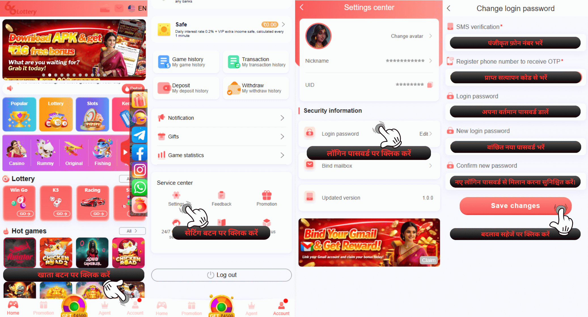
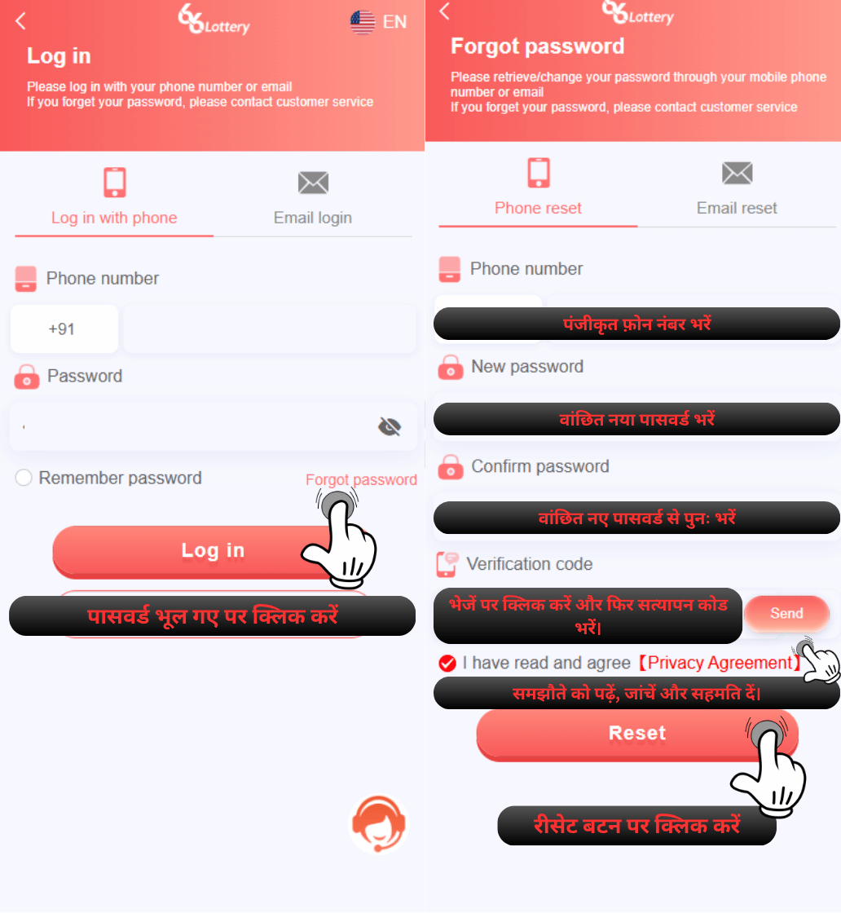
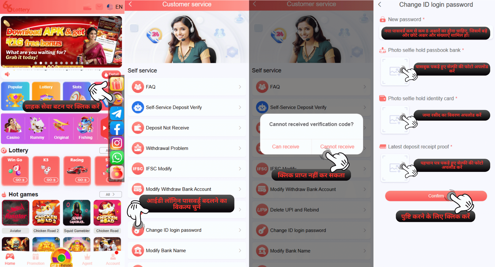
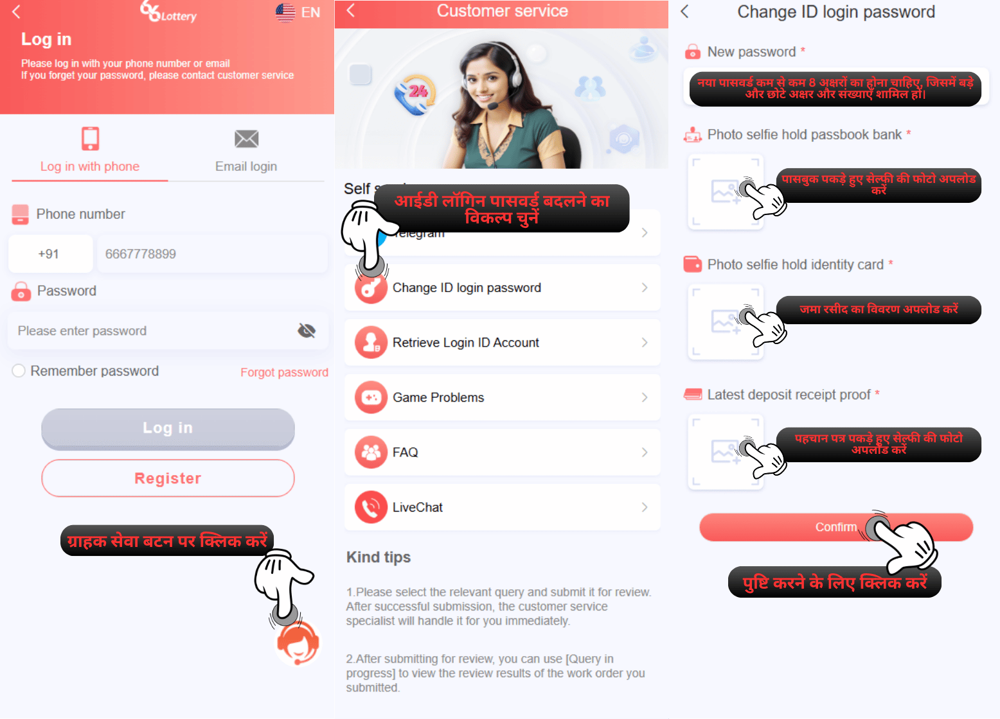

लॉगिन और निकासी पासवर्ड भूल गए
प्रश्न : अगर मैं अपना पासवर्ड भूल गया हूँ तो मैं क्या कर सकता हूँ?
उत्तर :अगर आप अपना पासवर्ड भूल गए हैं, तो हमारे पास आपके खाते का पासवर्ड पुनर्प्राप्त करने के दो तरीके हैं, जिसमें OTP कोड प्राप्त करना शामिल है, जिसे हम निम्न चरण द्वारा "लॉगिन से पहले" और "लॉगिन के बाद" के रूप में अलग करेंगे:
लॉगिन के बाद1.अपने लॉगिन होमपेज पर लॉगिन करें
2.ग्राहक सेवा बटन पर क्लिक करें
3.आईडी लॉगिन पासवर्ड बदलें चुनें
4.प्राप्त कर सकते हैं चुनें
5.नया पासवर्ड भरें
6.भेजें पर क्लिक करें और आपके पंजीकृत फ़ोन नंबर पर एक सत्यापन कोड भेजा जाएगा
7.सत्यापन कोड प्राप्त करने के बाद, सत्यापन कोड भरें
8."पुष्टि करें" बटन पर क्लिक करें
1.लॉगिन पेज पर जाएँ
2.पासवर्ड भूल गए पर क्लिक करें
3.अपने पंजीकरण नंबर के बराबर फ़ोन नंबर दर्ज करें
4.अपना नया पासवर्ड बनाएँ (बड़े-छोटे अक्षरों के साथ न्यूनतम 8 अक्षर)
5.नए पासवर्ड की पुष्टि करें
6.भेजें बटन पर क्लिक करें और सत्यापन कोड आपके द्वारा पंजीकृत फ़ोन नंबर पर भेजा जाएगा
7.सत्यापन कोड प्राप्त करने के बाद, सत्यापन कोड भरें
8.मैंने [गोपनीयता अनुबंध] पढ़ लिया है और सहमत हूँ पर क्लिक करें
9."रीसेट" बटन पर क्लिक करें
लॉगिन के बाद

लॉगिन से पहले

प्रश्न : मैं अपना पासवर्ड कैसे बना सकता हूँ, कृपया मुझे बताएँ
उत्तर : एक अद्वितीय पासवर्ड बनाने के लिए, इसमें संख्याओं के साथ बड़े और छोटे अक्षर होने चाहिए, और अवधि या अंडरस्कोर जैसे वर्णों का उपयोग नहीं किया जा सकता है।
उदाहरण : QWERtyu1
हम खातों को चुराने से बचने और अपना पासवर्ड किसी और को न दिखाने के लिए एक मजबूत पासवर्ड सेट करने की सलाह देते हैं।
यदि आप उपरोक्त चरण के साथ अपना पासवर्ड रीसेट नहीं कर सकते हैं, तो आपको ग्राहक सेवा स्वयं-सेवा केंद्र पर सबमिट करना होगा और "आईडी लॉगिन पासवर्ड बदलें" के लिए सभी आवश्यकताएँ सबमिट करनी होंगी और इस मुद्दे में सबमिट करने के दो तरीके होंगे जिन्हें हम "लॉगिन से पहले" और "लॉगिन के बाद" के रूप में विभाजित करेंगे, नीचे दिए गए चरण दर चरण :
1.अपने लॉगिन होमपेज पर लॉगिन करें
2.ग्राहक सेवा बटन पर क्लिक करें
3.आईडी लॉगिन पासवर्ड बदलें चुनें
4.प्राप्त नहीं कर सकते चुनें
5.वह नया पासवर्ड भरें जिसे आप भविष्य में उपयोग करना चाहते हैं
6.अपने आईडी खाते में की गई नवीनतम जमा रसीद अपलोड करें
7.अपना बैंक पासबुक पकड़े हुए सेल्फी तस्वीर अपलोड करें
8.अपना पहचान पत्र पकड़े हुए सेल्फी तस्वीर अपलोड करें
9."पुष्टि करें" बटन पर क्लिक करें
1.लॉगिन करने से पहले : https://www.66lottery.vip/
2.ग्राहक सेवा बटन पर क्लिक करें
3.आईडी लॉगिन पासवर्ड बदलें पर क्लिक करें
4.सही आईडी अकाउंट भरें
5.नया पासवर्ड भरें जिसे आप भविष्य में इस्तेमाल करना चाहते हैं
6.अपना बैंक पासबुक पकड़े हुए सेल्फी तस्वीर अपलोड करें
7.अपना पहचान पत्र पकड़े हुए सेल्फी तस्वीर अपलोड करें
8.अपने आईडी अकाउंट में की गई नवीनतम जमा रसीद अपलोड करें
9."पुष्टि करें" बटन पर क्लिक करें
उदाहरण : QWERtyu1
हम खातों को चुराने से बचने और अपना पासवर्ड किसी और को न दिखाने के लिए एक मजबूत पासवर्ड सेट करने की सलाह देते हैं।
यदि आप उपरोक्त चरण के साथ अपना पासवर्ड रीसेट नहीं कर सकते हैं, तो आपको ग्राहक सेवा स्वयं-सेवा केंद्र पर सबमिट करना होगा और "आईडी लॉगिन पासवर्ड बदलें" के लिए सभी आवश्यकताएँ सबमिट करनी होंगी और इस मुद्दे में सबमिट करने के दो तरीके होंगे जिन्हें हम "लॉगिन से पहले" और "लॉगिन के बाद" के रूप में विभाजित करेंगे, नीचे दिए गए चरण दर चरण :
After Login

लॉगिन करने से पहले
